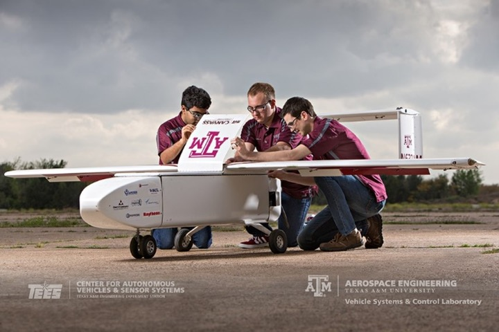
VSCL · Fixed-wing
Pegasus UAS
12 ft wingspan; MTOW 108 lbf with 30 lbf payload; 90 kt maximum and 26 kt stall; endurance over one hour. Fuselage accepts a 12U half-rack bay for flight-test instrumentation. Designed and patented by VSCL.
Flight Tests
Flight-test infrastructure at Texas A&M University supports verification and validation of algorithms developed within the D³ARWIN framework. The Vehicle Systems & Control Laboratory (VSCL) and Advanced Vertical Flight Laboratory (AVFL) contribute instrumented fixed-wing, small-UAS, and rotorcraft platforms, a pilot-in-the-loop flight simulator, and a dedicated UAS flight-testing facility on the RELLIS campus.
Overview
Candidate algorithms progress through a staged verification sequence: software-in-the-loop (SIL) simulation; pilot-in-the-loop nonlinear six-DOF simulation on the VSCL Engineering Flight Simulator; captive-carry instrumented trials on VSCL and AVFL airframes; and closed-loop autonomous operation under safety-monitor supervision. Test procedures, data acquisition configurations, and post-flight analyses are documented for independent review.
Instrumented test articles operated by the affiliated laboratories.

VSCL · Fixed-wing
12 ft wingspan; MTOW 108 lbf with 30 lbf payload; 90 kt maximum and 26 kt stall; endurance over one hour. Fuselage accepts a 12U half-rack bay for flight-test instrumentation. Designed and patented by VSCL.
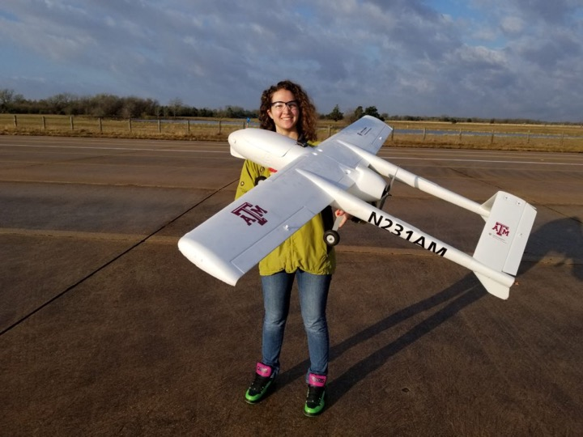
VSCL · Small UAS
54 in wingspan; configurable from 5.5 to 12 lbf takeoff weight; endurance of 40 to 60 minutes. Operated with hyperspectral, DSLR, and multispectral payload variants.
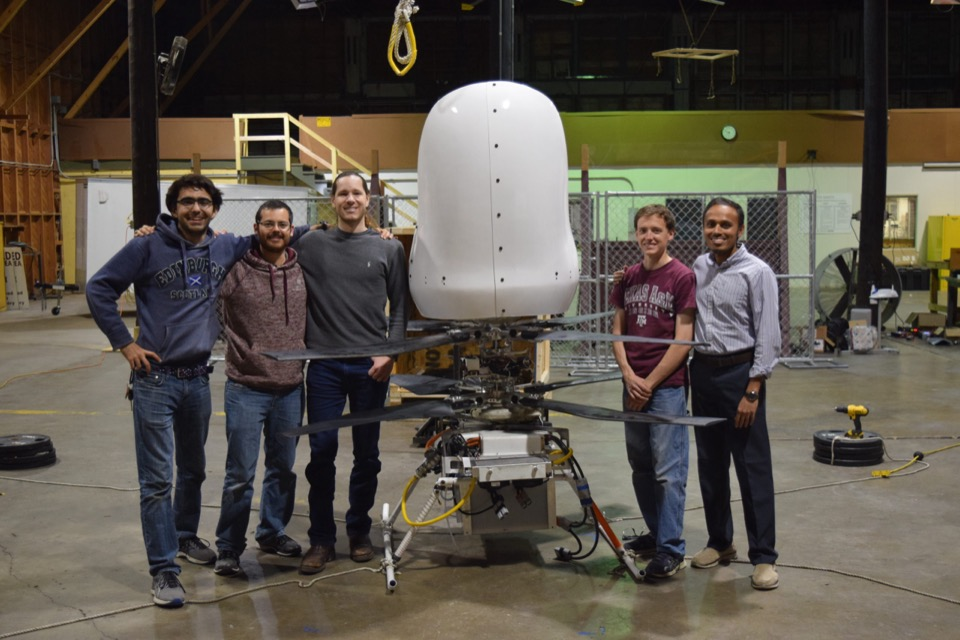
AVFL · GoFly · Full-scale
All-electric coaxial rotorcraft developed for the Boeing GoFly Prize. 750 lb gross weight with 200 lb payload; 8.2 ft rotor diameter; 11 kWh / 600 V air-cooled battery driving 55 HP motors; measured 73 dBA at 50 ft during takeoff.
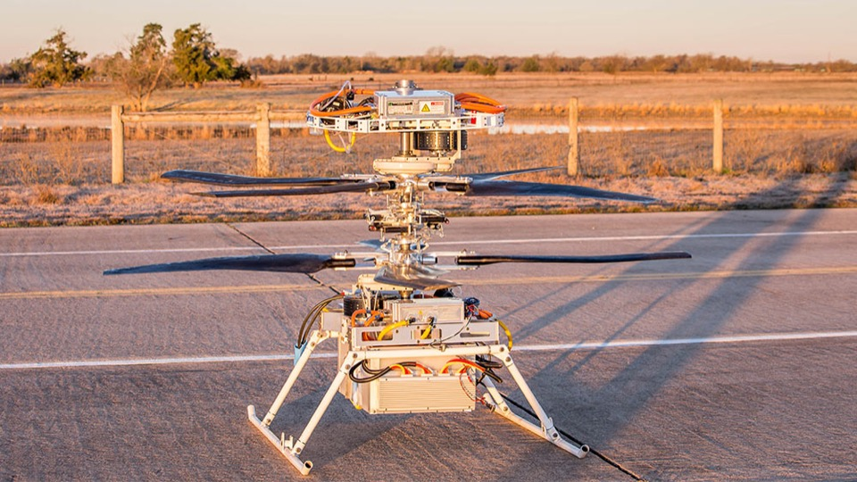
AVFL · GoFly · Phase III
22 lb prototype flown during the GoFly Prize Phase III competition in February 2020. Uses the coaxial rotor and fly-by-wire control architecture of the full-scale vehicle. Phase I (2018) and Phase II (2019) prize-winning team.
Dedicated infrastructure supporting pilot-in-the-loop simulation and outdoor UAS flight testing.
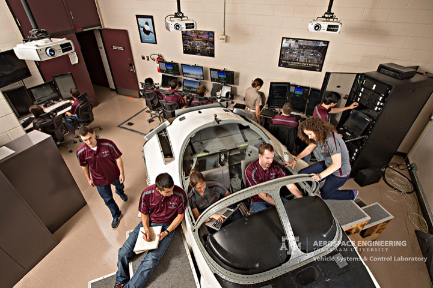
VSCL · Simulator
Real-time nonlinear six-DOF pilot-in-the-loop fixed-base simulator. 150° field-of-view projection at 30 Hz. Cockpit based on a surplus T-37 airframe with YF-16 sidestick and glass-cockpit instrumentation. Nine quad-core compute nodes support four concurrent operator stations and three UAS interfaces.
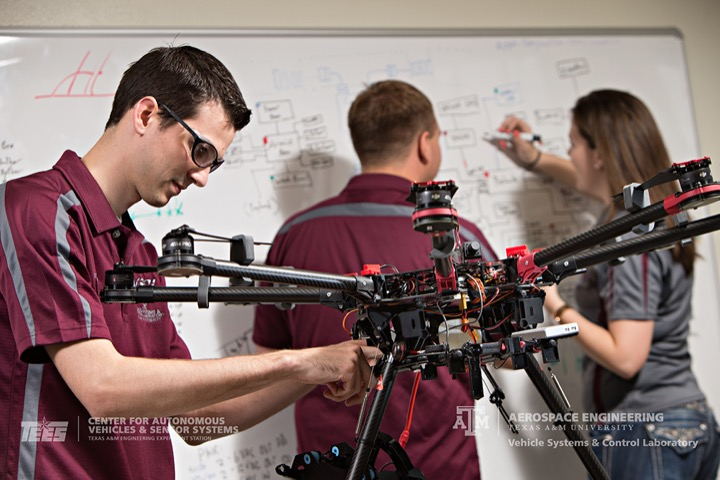
VSCL · Hangar & fab
12,000 ft² hangar with preflight briefing room and real-time weather display. On-site fabrication shops for metal, wood, and composite builds. Located on the TAMUS RELLIS campus, seven miles northwest of the main campus.
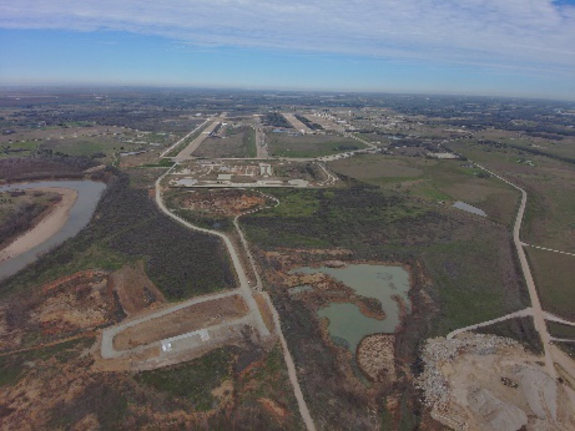
TAMUS · RELLIS Campus
15,000+ acres of controlled-access land including a 1,300-acre Proving Grounds. Five full-scale runways support crewed, uncrewed, wheeled, and tracked platforms. A dedicated FAA-approved BVLOS corridor spans more than 12 miles. Authorized under FAA Part 107 and multiple Part 91 Certificates of Authorization. On-site instrumentation includes PTZ and thermal cameras, radar, GPS-RTK reference, and weather and visibility sensors.
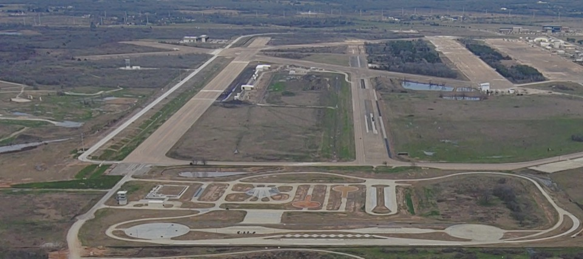
BCDC · Innovation Proving Grounds
Instrumented outdoor autonomy testing complex at the Bush Combat Development Complex on the RELLIS Campus. Includes the Mobility Challenge Course, an Off-Road Test Area with reconfigurable urban container village and terrain features, and sensor infrastructure for distributed test operations. Supports crewed and uncrewed ground and air platforms across representative mission conditions.
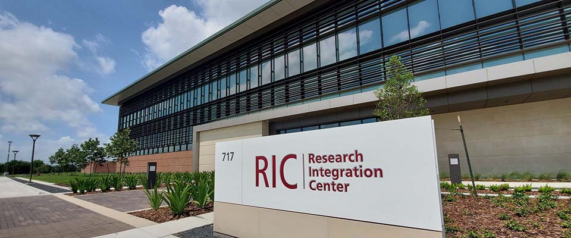
BCDC · IPG · Subterranean
600 ft of 48-inch-diameter subterranean tunnels at the BCDC Innovation Proving Grounds, adjacent to the Research Integration Center on the RELLIS Campus. Includes a heavily shielded Faraday-cage section, an industrial wind generator, and a 90 ft flood-capable segment. Supports UAS and UGV autonomy testing under GPS-denied conditions: inertial and visual navigation, simultaneous localization and mapping (SLAM), and multi-agent coordination.
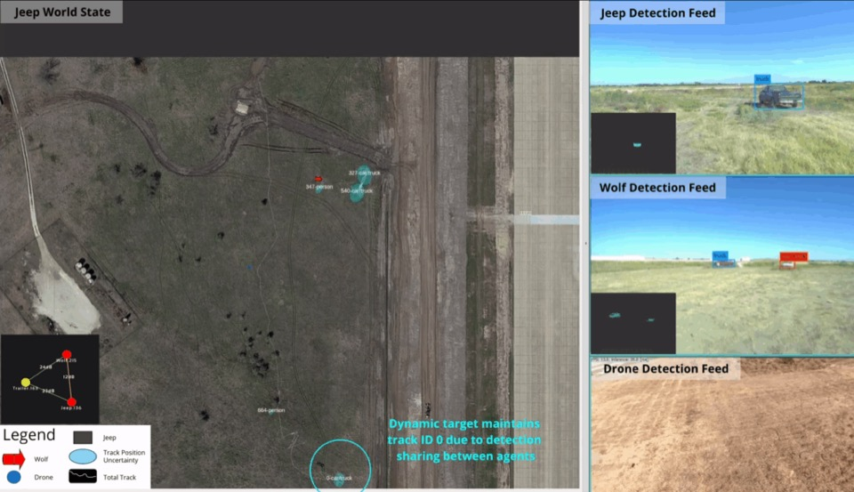
BCDC · Air-Ground Teamed Autonomy
Cooperative multi-platform autonomy demonstrations at the BCDC Innovation Proving Grounds. Mixed operations team instrumented ground vehicles (Clearpath Moose, HDT WOLF) with aerial systems (Grazer A) for target tracking, handoff, and shared situational awareness in off-road conditions.
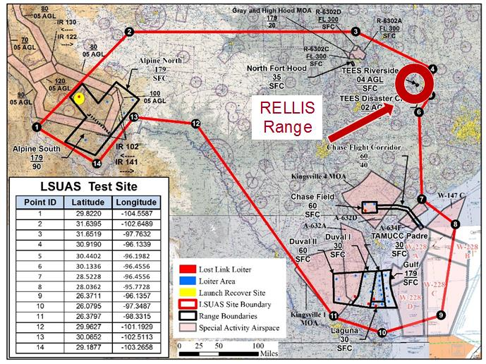
TAMU-CC · Autonomy Research Institute
Texas A&M-Corpus Christi operates one of the original FAA-designated UAS Test Sites (certified June 2014 as the Lone Star UAS Center of Excellence & Innovation; redesignated the Autonomy Research Institute in 2024). Eleven ranges span more than 6,000 square miles of proposed airspace from the Gulf Coast to Big Bend, with over 5,500 research flights conducted.
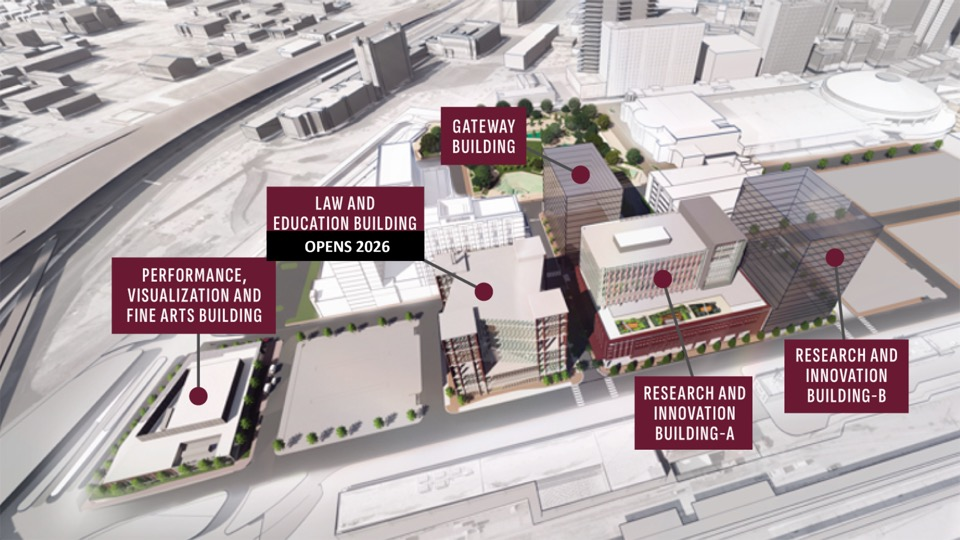
TAMU-Fort Worth · Advanced Aviation
Authorized by the FAA Reauthorization Act of 2024, with its laboratory component anchored at the Texas A&M-Fort Worth campus (opening Fall 2026). Research scope includes uncrewed systems, advanced air mobility, and supersonic and hypersonic aircraft. Hypersonics research led by Associate Dean for Research Ivett Leyva; operational test airspace coordinated through the Autonomy Research Institute.